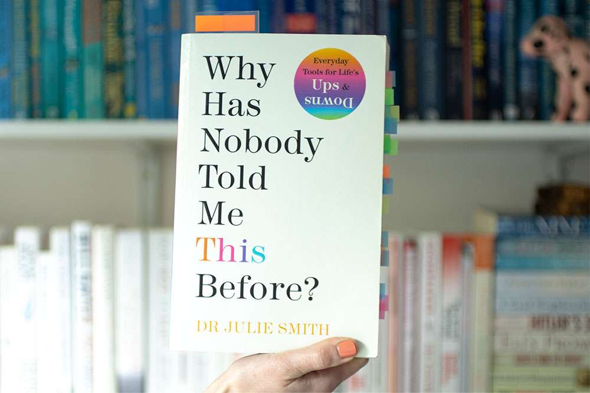

Introduction
I come from Nairobi, Kenya. I was born and raised in a town called Kisumu. I always grew up wanting to be a doctor and just until one day, I found myself pursuing a career in tech. I was completely new to the field, confused, discombobulated, as the average luo man would say just to show off his knowledge in english literature. However one day, It all just made sense. Gradually, I had not realized I was gaining not only passion, but will, courage and purpose in my career with Tech. Today, I am a software developer in the making, and I am so excited to see where this journey takes me.
Projects
Here are some of the projects I have worked on.
Project 1: Personal Portfolio Website
Description: A personal portfolio website to showcase my skills and projects.
View Project"About Me
Some of the things I have really enjoyed doing growing, is getting to learn more and more. I got to realize how curious of a person I am and I love to expand my knowledge on different things. I also picked up a habit of reading self-development books which have had a shift in my life. Some of my favorite books are:
- Gifted Hands by Ben Carson

- Think Big
-
Why Has Nobody Told Me This Before? by Julie Smith
 - The Power of Gratitude